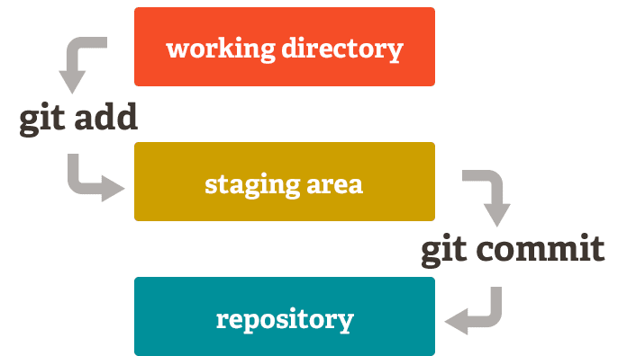

3 Your first repository
3.1 Get a repository
There are two ways to start:
a) Copy an existing repository from GitHub (this is what you do most of the time):
git clone <url>
cd <folder-name>git clone downloads the complete repository including its history into a new folder.
b) Turn an existing folder into a new repository:
cd <your-project-folder>
git initBoth ways create a hidden folder called .git. This is where Git stores the history. You can see it with ls -Force (PowerShell) or ls -a (Git Bash).
💡 If there is no .git folder in your project, Git commands don’t work. Git will say fatal: not a git repository.
⚠️ Never delete or change the .git folder by hand. If you delete it, the whole history is gone.
3.2 The three areas

Git has three areas for your files:
- Working directory: the files you see and edit in your folder.
- Staging area: the changes you have chosen for your next commit.
- Repository: all commits that are saved in the history.
So saving a change in Git is a two-step process: first you add the change to the staging area, then you commit it.
💡 A commit is saved only on your computer. Nobody else can see it until you push it (see chapter 4).
3.3 Check what has changed
Show which files are changed, new (untracked) or staged:
git statusShow the changed lines before you stage them:
git diffShow the changed lines that are already staged:
git diff --stagedIn VS Code, click on a file in the Source Control view to see the changes side by side.
3.4 Stage and commit
Add one file to the staging area:
git add <file>Add all changed and new files to the staging area:
git add .Save the staged changes as a new commit:
git commit -m "Add login form"In VS Code: click + next to a file to stage it, write a message and click Commit.
3.5 Review before you commit
💡 We always review our changes during staging!
Don’t just type git add . without looking. Instead:
- Look at each changed file with
git diffor in VS Code. - Is the change correct and complete? Then stage it.
- Stage all files that belong to one topic and commit them together.
- Repeat with the next topic.
Example: you changed 27 files. 20 of them are for the new login page and 7 fix a bug in the menu. Make two commits, one for each topic.
3.6 Write good commit messages
A good commit message tells your team what changed. Your team mates should understand it without looking at the code.
| ❌ Bad | ✅ Good |
|---|---|
update |
Add validation to registration form |
fix |
Fix crash when user list is empty |
asdf |
Remove unused images from pics folder |
changes from Monday |
Translate start page to English |
Tips:
- Start with a verb: Add, Fix, Remove, Change, Update.
- Keep the first line short (about 50 characters).
- If the commit belongs to a GitHub issue, add the issue number (see chapter 9).
3.7 Look at the history
git log --onelineEach line is one commit: a short commit ID (e.g. 8756b24) and the message. Press q to leave the list.
To see the history of all branches as a graph:
git log --oneline --graph --all3.8 Look at a commit
Every commit has an ID, e.g. 8756b24. Git also has short names for commits:
HEADis the commit you are on right now (usually your newest commit).HEAD~1is one commit beforeHEAD,HEAD~2is two commits before, and so on.
Show which lines a commit changed:
git show HEAD
git show 8756b24